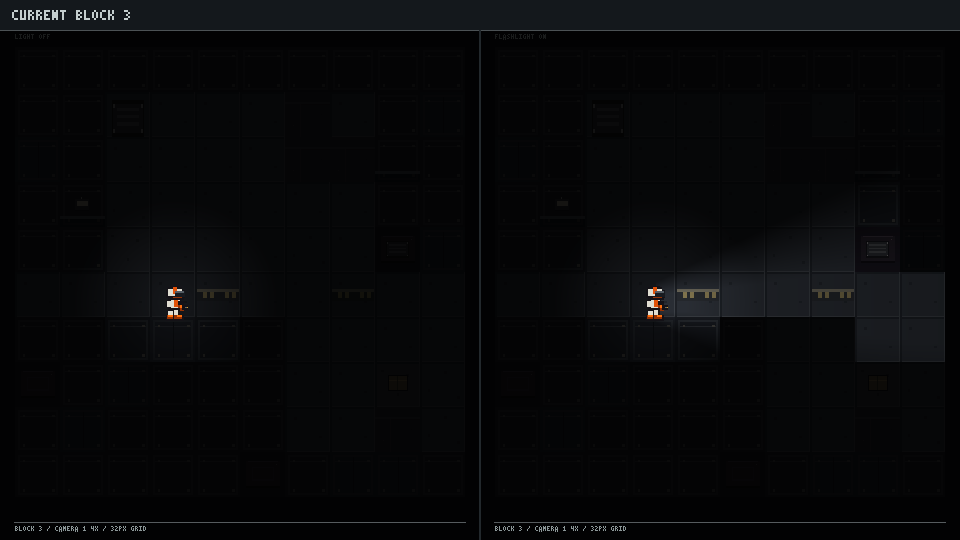
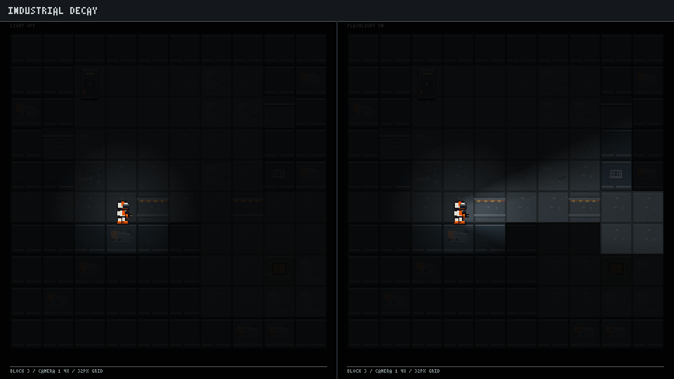
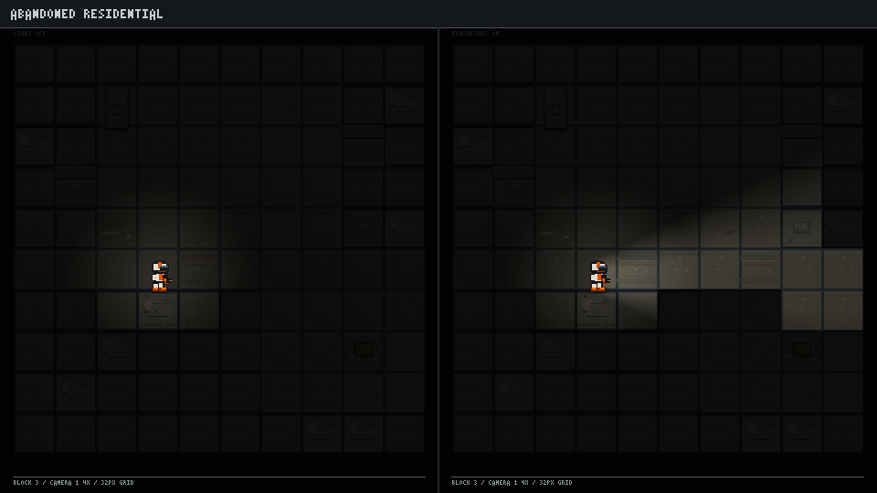
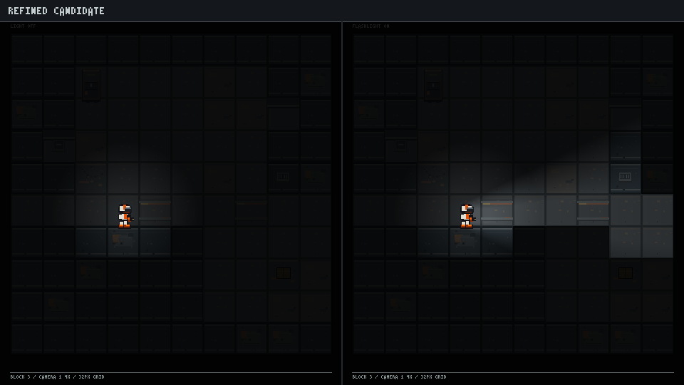

Matched fixed-layout 960×540 previews. Each frame pairs the same representative corridor, room, threshold, and container area under light-off and flashlight-on conditions. See README.md for the rendering limits.

Current authored tiles and shared rendering assets.
Cold concrete, steel panel faces, restrained rust and maintenance yellow.
Worn plaster, muted olive-beige, modest residential history.
Industrial base structure with a few quiet human traces.